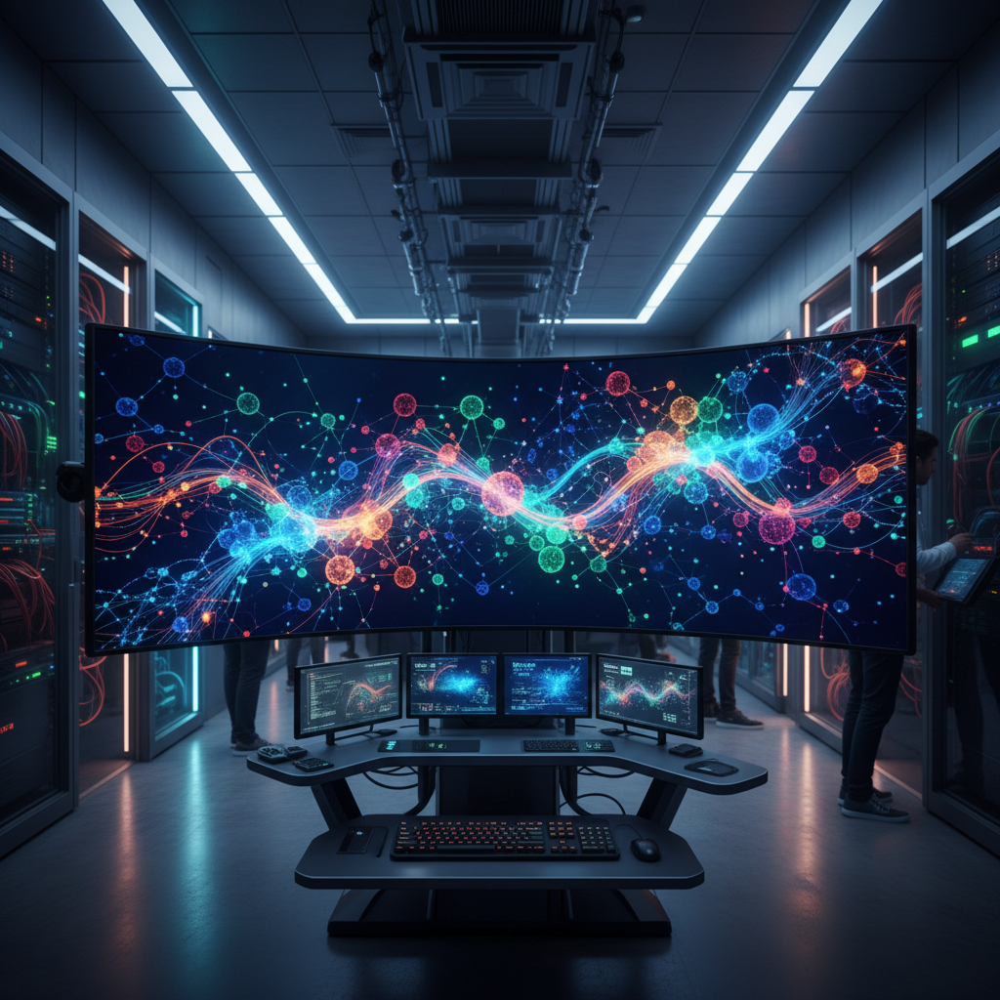
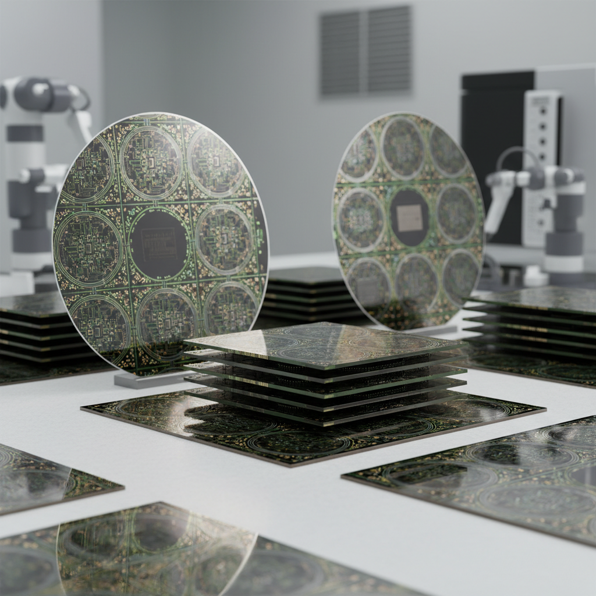
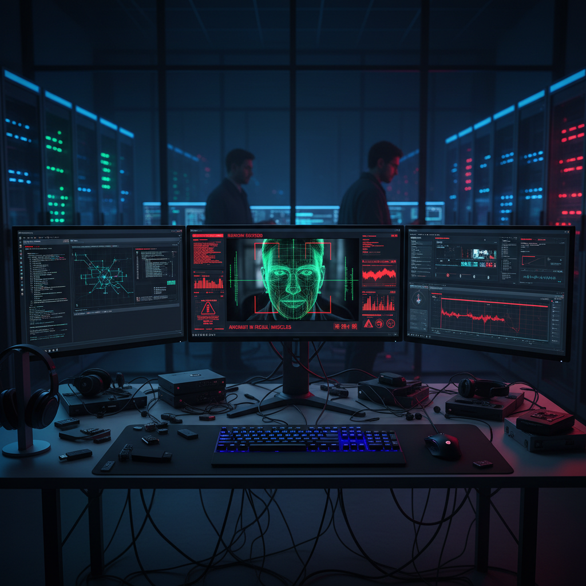
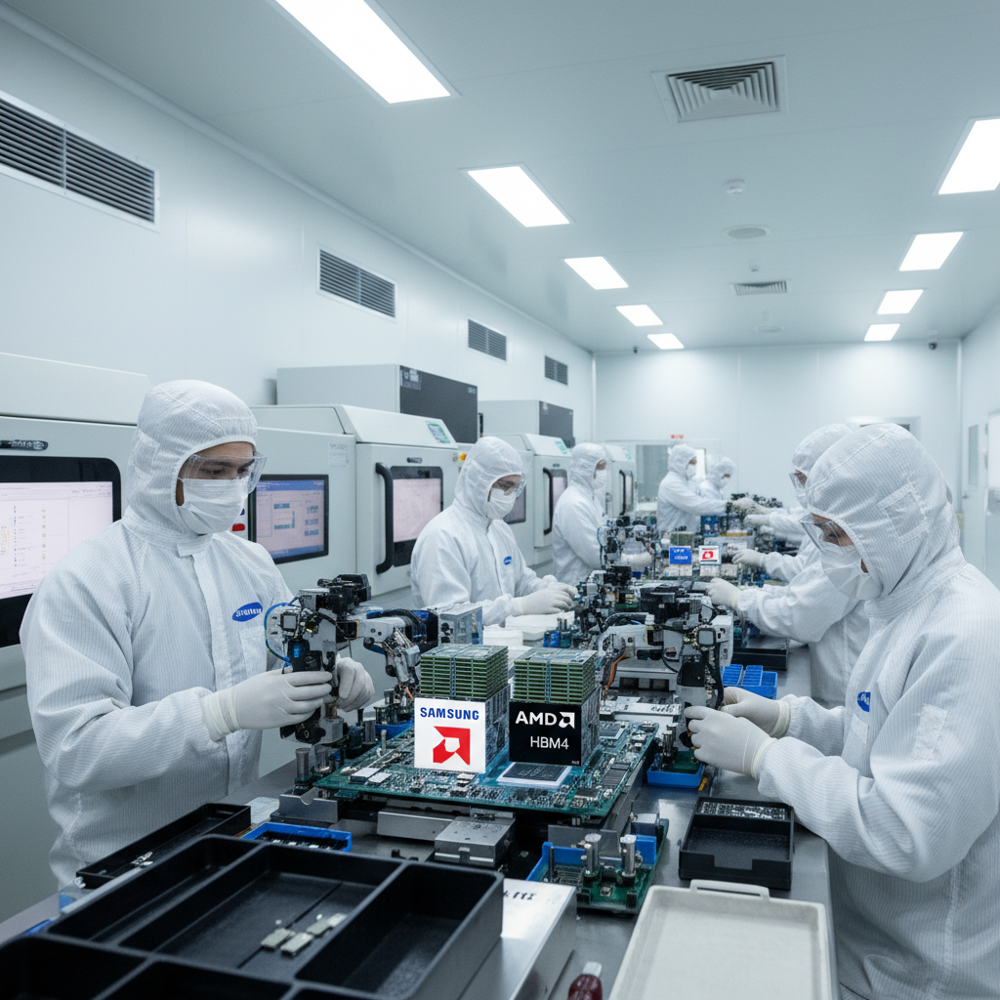

MiniMax가 3월 18일 자기진화 능력을 가진 M2.7 모델을 공개하며 AI 자체 개발의 새로운 시대를 열었습니다. Micron의 분기 매출이 196% 증가하며 AI 메모리 슈퍼사이클의 진입을 알렸고, 삼성-AMD 동맹이 AI 반도체 시장의 판도 변화를 예고했습니다. 한편 Grok 딥페이크 소송은 AI 모델의 안전장치 부재가 실질적 피해로 이어지는 첫 대규모 법적 사건이 될 전망입니다. Anthropic의 기업 시장 점유율이 73%에 달하며 시장의 지각변동을 보여줍니다.
MiniMax unveiled its M2.7 model on March 18 with self-evolution capabilities, marking a new era in AI's self-improvement. Micron's quarterly revenue jumped 196%, signaling an AI memory supercycle. The Samsung-AMD alliance hints at shifting semiconductor market dynamics. Meanwhile, the Grok deepfake lawsuit could become the first major legal case revealing real-world harm from AI safety failures. Anthropic's 73% enterprise adoption shows market realignment.

중국 AI 스타트업 MiniMax가 3월 18일 차세대 AI 모델 M2.7을 공개했습니다. 이 모델의 핵심 특징은 '자기진화(Self-Evolution)' 능력으로, 개발 워크플로우의 30~50%를 모델 스스로 수행합니다. SWE-Pro 벤치마크에서 56.22%를 기록해 최정상급 모델에 근접했으며, 오픈소스 모델 중 최고 ELO 점수(1495)를 달성했습니다.
Chinese AI startup MiniMax unveiled its next-generation M2.7 model on March 18. The key feature is "Self-Evolution" capability — the model handles 30-50% of its own development workflow. It scored 56.22% on SWE-Pro benchmark, approaching top-tier models, and achieved the highest ELO score (1495) among open-source models.
입력 100만 토큰당 0.30달러의 파격적 가격도 주목됩니다. 이는 OpenAI의 GPT-4o mini보다 92% 저렴한 수치입니다. 자기진화 능력은 개발자가 명시적으로 지시하지 않아도 모델이 자동으로 프롬프트를 개선하고, 코드를 최적화하며, 성능을 향상시키는 메커니즘을 의미합니다. 이러한 기능이 보편화되면 AI 개발의 비용과 속도, 접근성 모두에 혁명을 가져올 수 있습니다.
The aggressive pricing of $0.30 per 1M input tokens is noteworthy — 92% cheaper than GPT-4o mini. Self-evolution means the model automatically improves prompts, optimizes code, and enhances performance without explicit developer instruction. If this capability becomes mainstream, it could revolutionize the cost, speed, and accessibility of AI development.
핵심 요약: MiniMax M2.7은 AI가 스스로 진화하는 시대의 서막입니다. '자기진화' 모델이 보편화되면 AI 개발 비용과 속도가 근본적으로 바뀔 수 있습니다.
Key takeaway: MiniMax M2.7 marks the dawn of self-evolving AI. If self-evolution models become mainstream, the cost and speed of AI development could fundamentally change.

Micron이 2026 회계연도 2분기 실적을 발표했습니다. 매출 238.6억 달러로 전년 대비 196% 증가하며 시장 전망(200.7억 달러)을 약 19% 상회했습니다. 비GAAP 주당순이익은 12.20달러로 컨센서스를 약 31% 초과했습니다. 핵심 동력은 AI 고대역폭 메모리(HBM)입니다.
Micron reported Q2 FY2026 results with revenue of $23.86B, up 196% YoY and ~19% above estimates. Non-GAAP EPS of $12.20 beat consensus by ~31%. The key driver is AI High Bandwidth Memory.
Micron은 HBM4 36GB 12단 적층 메모리의 대량 출하를 시작했으며, NVIDIA Vera Rubin 플랫폼의 핵심 부품으로 채택됐습니다. 올해 남은 기간의 HBM 생산 물량은 이미 전량 계약 완료 상태입니다. AI 메모리 수요가 단순한 '부족' 상태를 넘어 '구조적 공급 부족'에 진입했음을 시사합니다.
Micron began volume shipments of HBM4 36GB 12-high memory, adopted as a core component of NVIDIA's Vera Rubin platform. HBM production capacity is already fully committed for the rest of the year. This signals AI memory demand has moved beyond simple shortage into structural undersupply.
핵심 요약: AI 메모리 수요가 '부족'을 넘어 '구조적 공급 부족'으로 진입했습니다. Micron의 실적은 AI 인프라 투자가 아직 초기 단계임을 보여줍니다.
Key takeaway: AI memory demand has moved beyond shortage into structural undersupply. Micron's results show that AI infrastructure investment is still in its early stages.

테네시주 10대 청소년 3명이 일론 머스크의 xAI와 Grok AI를 상대로 캘리포니아 연방법원에 소송을 제기했습니다. xAI의 Grok 모델을 기반으로 한 서드파티 앱이 졸업앨범 사진과 소셜미디어 이미지를 이용해 성적 딥페이크를 생성했다는 혐의입니다.
Three Tennessee teenagers filed a lawsuit against Elon Musk's xAI and Grok AI in California federal court. A third-party app powered by xAI's Grok model allegedly used yearbook photos and social media images to generate sexual deepfakes.
최소 18명 이상의 피해자가 확인됐으며, 일부는 아직 미성년자입니다. 소장에는 아동 포르노 유포 의도부터 정서적 고통의 고의적 가해까지 13개 혐의가 포함됐습니다. 이 사건은 AI 모델의 안전장치 부재가 실질적 피해로 직결되는 첫 대규모 법적 선례가 될 수 있으며, 딥페이크 규제와 AI 기업의 책임 범위에 대한 중요한 판례를 만들 수 있습니다.
At least 18 victims were identified, some still minors. The complaint includes 13 counts ranging from intent to distribute child pornography to intentional infliction of emotional distress. This case could set legal precedents for deepfake regulation and AI companies' liability.
핵심 요약: AI 모델의 안전장치 부재가 실질적 피해로 이어지고 있습니다. 딥페이크 규제와 AI 기업의 책임 범위에 대한 법적 선례가 만들어질 수 있습니다.
Key takeaway: The lack of AI model safeguards is leading to real-world harm. This case could set legal precedents for deepfake regulation and AI companies' liability.
핀테크 기업 Ramp의 데이터에 따르면, 처음으로 AI 도구를 구매하는 기업들의 지출 중 Anthropic이 73%를 차지하고 있습니다. 이는 1월의 OpenAI와 50:50 비율에서 크게 변화한 수치입니다. Anthropic의 Claude가 기업 시장에서 빠르게 점유율을 확대하고 있음을 보여줍니다.
According to fintech firm Ramp's data, Anthropic now captures 73% of spending among companies purchasing AI tools for the first time, a dramatic shift from January's 50:50 split with OpenAI. This demonstrates Claude's rapid market share expansion in enterprise.
특히 소프트웨어 개발, 문서 작성, 리서치 분야에서 Claude의 실무 활용도가 높은 것으로 분석됩니다. 이는 기업들이 단순히 '가장 큰 모델'보다 '가장 유용한 모델'을 선택하는 추세를 보여줍니다. AI 시장의 판도가 브랜드와 규모에서 실제 성능과 사용성으로 빠르게 전환되고 있음을 의미합니다.
Claude's practical utility is particularly high in software development, document creation, and research. This shows that enterprises are choosing the "most useful model" rather than the "largest." The AI market is rapidly shifting from brand and scale to actual performance and usability.
핵심 요약: AI 시장의 판도가 빠르게 변하고 있습니다. Anthropic의 급부상은 '가장 큰 모델'이 아닌 '가장 유용한 모델'이 기업 시장을 지배할 수 있음을 보여줍니다.
Key takeaway: The AI market landscape is shifting rapidly. Anthropic's surge shows that the 'most useful model' — not the largest — can dominate enterprise adoption.

삼성전자가 AMD와 차세대 HBM4 메모리 공급을 위한 예비 계약을 체결했습니다. 이 메모리는 AMD의 MI455X 가속기와 헬리오스(Helios) 랙스케일 아키텍처에 사용될 예정입니다. 그동안 SK하이닉스-NVIDIA 동맹에 비해 열세였던 삼성이 AMD와의 파트너십을 통해 AI 메모리 시장에서 새로운 돌파구를 마련한 것입니다.
Samsung Electronics signed a preliminary agreement with AMD for next-generation HBM4 memory supply. The memory will be used in AMD's MI455X accelerators and Helios rack-scale architecture. Samsung, which has been at a disadvantage compared to the SK Hynix-NVIDIA alliance, has found a new breakthrough in the AI memory market through its AMD partnership.
이는 AI 반도체 공급망의 다변화를 의미합니다. 기존에는 NVIDIA와 SK하이닉스의 강한 협력이 시장을 주도했으나, 삼성-AMD 동맹의 형성으로 AI 반도체 시장이 '양강 구도'로 재편될 가능성이 열렸습니다. AMD는 NVIDIA의 독점적 지위에 도전할 수 있는 강력한 GPU 경쟁자이며, 이 파트너십은 AI 인프라 시장의 경쟁 구도를 근본적으로 변화시킬 수 있습니다.
This signals diversification of AI semiconductor supply chains. Previously dominated by the strong NVIDIA-SK Hynix partnership, the market may now reshape into a two-power structure. AMD is a strong GPU competitor to NVIDIA, and this partnership could fundamentally alter AI infrastructure market dynamics.
핵심 요약: 삼성-AMD 동맹은 SK하이닉스-NVIDIA 축에 대한 전략적 대항마입니다. AI 반도체 시장이 '양강 구도'로 재편될 가능성이 열렸습니다.
Key takeaway: The Samsung-AMD alliance is a strategic counterweight to the SK Hynix-NVIDIA axis. The AI semiconductor market may be reshaping into a two-power structure.
MiniMax M2.7이 자기 개발의 30~50%를 스스로 수행한다는 것은 AI 개발 방식의 근본적 전환을 예고합니다. 인간 개발자의 역할이 '설계자'에서 '감독자'로 변화할 수 있습니다.
MiniMax M2.7 handling 30-50% of its own development signals a fundamental shift in AI development. The role of human developers may evolve from 'builders' to 'supervisors.'
Micron의 196% 매출 성장과 HBM 전량 계약은 AI 메모리 수요가 구조적 공급 부족 상태에 진입했음을 보여줍니다. 삼성-AMD 동맹은 이 시장의 경쟁을 한층 격화시킬 것입니다.
Micron's 196% revenue growth and fully committed HBM capacity show AI memory demand has entered structural undersupply. The Samsung-AMD alliance will further intensify competition.
Grok 딥페이크 소송은 AI 모델의 안전장치 부재가 실질적 피해로 이어지는 첫 번째 대규모 법적 사례가 될 수 있습니다. AI 기업의 책임 범위에 대한 사회적 논의가 본격화됩니다.
The Grok deepfake lawsuit could become the first major legal case where lack of AI safeguards led to real harm. The societal debate on AI companies' liability is now in full force.
Anthropic이 신규 기업 고객의 73%를 차지하며 OpenAI를 추월하고 있습니다. '가장 큰 모델'이 아닌 '가장 유용한 모델'이 시장을 지배하는 시대가 오고 있습니다.
Anthropic capturing 73% of new enterprise AI spend is overtaking OpenAI. The era where the 'most useful model' — not the largest — dominates the market is arriving.